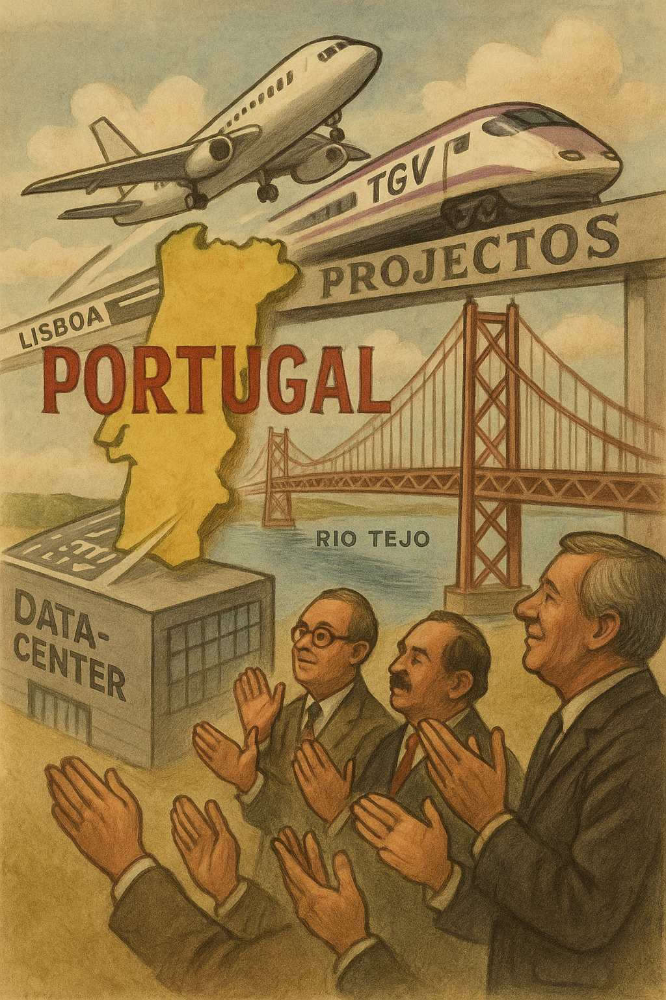

Publicado em 2025-05-07 21:51:46
Portugal não é um país. É um estaleiro imaginário com promessas a prazo. Desde que há memória (e há pouca, convenhamos), andamos a construir coisas que nunca terminam — mas que dão ótimos slides de apresentação.
Está quase. Desde os anos 70. Já mudou de sítio mais vezes que o Papa de discurso.
É Alcochete, não, é Montijo! Agora será em Alverca, talvez Beja — ou então um aeroporto flutuante na Trafaria. A certeza é uma: o betão continua virgem.
Claro! Em 2030. Ou 2050. Ou quando França nos emprestar os trilhos.
O comboio de alta velocidade serve para debates — não para viajar. Porque o importante é dizer que se vai ter. Ter mesmo... é um detalhe técnico.
Por que não mais uma? Temos pontes para quem quer fugir de Lisboa... mas não para fugir à mediocridade.
Cada ponte custa milhões. Cada reparação, outros tantos. E cada novo projeto vem com estudos, concursos e contratos assinados com a leveza de quem nunca paga do bolso.
Sim, vamos ter os maiores da Europa!
Mas com energia elétrica racionada, água cada vez mais escassa e salários dignos da Idade Média. Porque em Portugal, o futuro é digital — mas o povo continua analógico e pendurado num recibo verde.
Portugal 2025 é o país onde os anúncios são obras e os ministros, arquitetos de ficção.
Onde o progresso mora nas maquetes e o povo… mora mal.
Os senhores dos dossiers continuam a vender sonhos com cronogramas cor-de-rosa — enquanto os comboios reais avariam, os hospitais colapsam e os professores fazem turnos em três escolas.
Mas não faz mal: está tudo previsto no Plano Estratégico Plurianual de Crescimento e Resiliência Sustentável até 2095 (com revisão em 2027, claro).
Nota final:
Portugal é o único país onde se faz campanha com projetos que ainda não existem, se inaugura o que não funciona, e se elogia o que ainda ninguém usou.
E nós... batemos palmas.
Ou então escrevemos.
Por Augustus Veritas